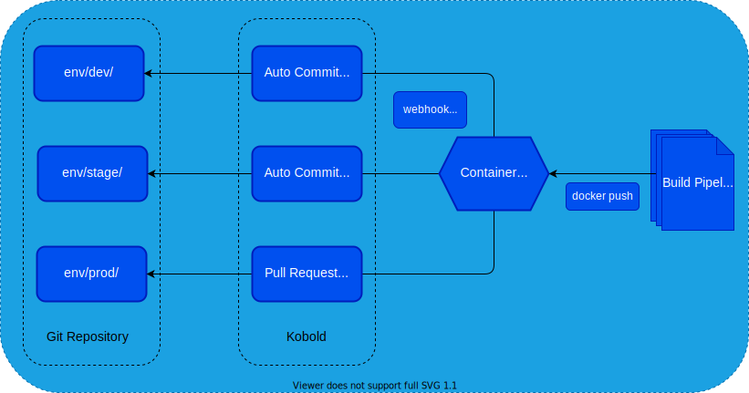

Introduction

Kobold is a gitbot that reacts to webhook events, typically emitted by container registries. When it receives an event, it searches one or more configured repositories for yaml files for image nodes containing a special inline comment.
The presence of this comment signals to kobold that it should act on this image reference. It then determines if the given image tag should be updated. After it is done walking the repository, it will commit and push the change and optionally make open a pull request.
It can walk the same repository multiple times with different scopes, i.e. on /env/dev it should make a direct commit but on /env/prod it should open a pull request instead.
This provides an agnostic way of updating image references in git repositories. Typically other tools would take over from here, for example argocd could detect the changes made by kobold and sync them into the kubernetes cluster.
However, kobold is not bound to any specific tool. It is not even bound to kubernetes resources. It cant detect image references in other yaml files as well. For example docker-compose files.
One could even use it to keep a service in sync across multiple application repositories. Imagine, you build a microservice and it is used for integration tests in a number of other repositories. Kobold could ensure they stay in sync.
Webhooks Events
Kobold listens for webhooks event using the endpoint configurations from the config.yaml. The webhook endpoints can have different types such as dockerhub or ACR. This is because webhooks events from the various registries send different payloads.
Since kobold requires the digest to work, some registries require kobold to fetch the digest upon receiving the event because its not part of the payload. If such a registry is used, kobold requires to be able to authenticate against the registry.
Comments
Once a webhook event is received, kobold performs a search in any repository that is subscribed to the origin endpoint. It looks for image nodes containing an inline comment with some options to configure the behavior on case by case basis.
Inline comments keep the logic lean and avoid verbosity while preserving valid yaml.
apiVersion: v1
kind: Pod
metadata:
name: my-pod
spec:
containers:
- name: my-app
image: org/app # kobold: tag: ^1; type: semver
Format
The comments parsed by kobold have the following format:
# kobold: tag: <tag-name>; type: <tag-type>
The tag-type can be either exact, semver, or regex, and specifies how kobold should interpret the tag-name.
For example, if tag-type is semver, the tag-name can include common semantic versioning semantics, such as ^1 to denote that any tag between v1 and v2 should be matched (not including v2).
Exact Match
When using the type exact as comment option. The tag from the webhook event
must match exactly the tag in the comment option.
image: bluebrown/busybox # kobold: tag: latest; type: exact
Semantic Versioning
It is best practice to use semantic versioning. With the type semver, you can
match image tags that adhere to the semver spec.
image: bluebrown/busybox # kobold: tag: ^1; type: semver
The incoming tag is matched with the tag in the comment option using Masterminds semver. You can review the comparison rules in their readme to learn more.
Regular Expression
If you don't want to use exact matches and your team is not doing semver yet,
you can use the regex type to match any pattern.
image: bluebrown/busybox # kobold: tag: sprint_\d+; type: regex
Image Tags
By default, the image tags in the git repository are updated with the digest of the container image, rather than just the tag.
The digest is a unique identifier that is generated based on the contents of the image, so even if the tag remains the same, the digest will change if the contents of the image are updated. This allows kobold to stay up to date with the correct image, even if the same tag is pushed multiple times.
The behavior can be configured using the --imageref-template flag. The default
value is the below.
{{ .Image }}:{{ .Tag }}@{{ .Digest }}
This string must be a valid go-template. The data passed into this template is
the PushEvent.
Note that that when using the default form, the tag is only there for informational purposes. This is because most registries will ignore the tag if a digest is present.
Configuration
Kobold parses a config file in order to wire up the webhook server. The config file is composed of various sections that can be pieced together. This allows for flexibility while working with multiple registries, repositories and branches.
Kobold will detected changes to the configuration file and perform a graceful reload, without interrupting currently running processes.
Environment variables in the config files are supported. They will be expected
according to linux conventions, meaning $var and ${var} work.
Below is an example with all possible configurations. Many properties are options. You can grab the json-schema, to learn more.
version: v1
commitMessage:
title: "chore(kobold): update images"
description: |
{{- range . }}
- change {{ .Source }}[{{ .Parent }}]:
- old: {{ .OldImageRef }}
- new: {{ .NewImageRef }}
- opt: {{ .OptionsExpression }}
{{- end }}
registryAuth:
namespace: ${NAMESPACE}
serviceAccount: kobold
imagePullSecrets:
- name: regcreds
endpoints:
- name: dockerhub
type: dockerhub
path: /dockerhub
requiredHeaders: []
repositories:
- name: kobold
url: https://github.com/bluebrown/kobold
username: "${GIT_USR}"
password: "${GIT_PAT}"
provider: github
subscriptions:
- name: example
endpointRefs:
- name: dockerhub
repositoryRef:
name: kobold
branch: main
strategy: pull-request
scopes:
- env/dev/
- env/stage/
fileAssociations:
- kind: ko-build
pattern: ".ko.yaml"
- kind: docker-compose
pattern: "*compose*.y?ml"
- kind: kubernetes
pattern: "*"
Endpoints
The endpoints section of the config file specifies the webhook endpoints that Kobold should listen to. These can be of different types, such as Azure Container Registry or Docker Hub.
Each endpoint must have a unique name, a type, a path and a optional list of requiredHeaders. The path is the URL path that the endpoint listens to, and the requiredHeaders are HTTP headers that must be included in the webhook request for it to be accepted by Kobold.
endpoints:
- name: myacr
type: acr
path: /acr/292d91a8-d073-4a65-99b8-0018fa6f8f46
requiredHeaders:
- key: Authorization
value: "Basic ${BASE64AUTH}"
Types
Currently supported endpoint types are acr, dockerhub, distribution and generic.
The generic type expects the image reference in plain text. It can be used if you
want to dispatch events manually, perhaps via pipeline.
Note If there is no type for your registry of choice, please open an issue so that we can add it to the codebase.
Repositories
The repositories section of the config file specifies the git repositories that Kobold should update when it receives a webhook event. The presence of a repository does not lead to any actual updates when an event is received. The repository functions as abstract type that can be referenced by subscriptions.
repositories:
- name: kobold
url: https://github.com/bluebrown/kobold
username: "${GIT_USR}"
password: "${GIT_PAT}"
provider: github
At the moment, only password/token authentication is supported. This is because for pull-requests, you need to use password authentication regardless. So it is more easy to share the authentication config for regular git commands and pull-requests.
Note that the provider is not required but may help if kobold is not able to infer the provider based on the url.
Subscriptions
The subscriptions section of the config file specifies the rules that determine which webhook events should trigger updates to which repositories. Each subscription must have a name, a list of endpointRefs, a repositoryRef, a branch, a strategy, and a list of scopes.
The endpointRefs are references to the endpoints specified
in the endpoints section that should trigger this subscription.
The repositoryRef is a reference to the repository
specified in the repositories section that should be updated, the branch is the
branch of the repository to update.
The strategy is the update strategy and can be either commit or
pull-request.
The scopes are the file or directory paths within the
repository to operate on. This allows to subscribe with a given repository
multiple times using different branches, scopes and strategies.
subscriptions:
- name: example
endpointRefs:
- name: my-dockerhub
- name: my-acr
repositoryRef:
name: kobold
branch: main
strategy: pull-request
scopes:
- env/prod/
Pull Requests
By default kobold will commit directly to the configured branch of the subscription. However, it can be configured to open pull requests if it detects changes to a given subscription.
subscriptions:
- name: example
strategy: pull-request
branch: main
The branch name for the pull request will be kobold/<epoch-time> and the PR
will be made against branch in the subscription.
In order to use pull-requests, your git provider must be supported since git itself has no concept of pull requests. Pull requests are made via rest api call and hence provider specific.
Currently supported providers are github and azure.
The provider is inferred but can be configured via repository.
Note If your provider is not available, please open an issue so that we can add it to the codebase.
Scopes
Each subscription can be scoped to one or more path. The path in the scope list are inverted gitignore rules. So the matching works the same as in a .gitignore.
subscriptions:
- name: example
scopes:
- /env/prod/
- /docker-compose.yaml
This is useful if you want to use different strategies within the same
repository. For example you could use the commit strategy for your staging
environment and pull-request for the production environment.
It could be used to rollout new application versions automatically to a staging environment, for review by your stakeholders. Once they are happy, you can merge the pull request for your production environment.
subscriptions:
- name: stage
strategy: commit
scopes:
- /env/stage/
- name: prod
strategy: pull-request
scopes:
- /env/prod/
File Associations
The type of a given yaml file is determined by using glob to math the filename. The default matching rules look like this:
- kind: ko-build
pattern: ".ko.yaml"
- kind: docker-compose
pattern: "*compose*.y?ml"
- kind: kubernetes
pattern: "*"
In some cases it can be useful to overwrite the default rules. This can be done per subscription.
subscriptions:
- name: example
fileAssociations:
- kind: docker-compose
pattern: "dev.yaml"
- kind: kubernetes
pattern: "*"
If the builtin resolvers are not sufficient. You can create your own
resolvers, that you can reference in the fileAssociations.
Resolvers
It is possible to create custom resolvers, to look up image references in yaml files.
resolvers:
- name: my-custom
paths:
- path.to.image
- another.path
If a resolvers is used, via a file association, image references at all paths of the resolver are handled. Kobold does not stop on first match. Additionally, if a path does not exist, kobold will continue with the next path, without error or warning.
Registry Auth
Depending on the image registry, the push event payload may not contain all required data. In such cases, kobold will fetch the missing data from the given registry. Because of this it may need to authenticate against the registry.
The authn package is used for authentication. You can review their repository to learn more. It will be either the default or k8s chain.
Kubernetes
When running in kubernetes, the registryAuth property can be used to access
image pull secrets. For this the --k8schain switch must be set.
ImagePullSecrets are taken from the service account in the configuration and
from imagePullSecrets listed. Both service account and imagePullSecrets are
looked up in the given namespace.
registryAuth:
namespace: ${NAMESPACE}
serviceAccount: kobold
imagePullSecrets:
- name: regcreds
When enabling the k8schain, you may need to create rbac resources allowing kobold to lookup services accounts and secrets.
The below rbac resources config will be created if you use the provided kustomization, to ensure kobold is allowed to lookup service accounts and secrets in its own namespace.
apiVersion: v1
kind: ServiceAccount
metadata:
name: kobold
automountServiceAccountToken: true
imagePullSecrets: []
---
apiVersion: rbac.authorization.k8s.io/v1
kind: Role
metadata:
namespace: default
name: k8schain
rules:
- apiGroups: [""]
resources: ["serviceaccounts", "secrets"]
verbs: ["get", "watch", "list"]
---
apiVersion: rbac.authorization.k8s.io/v1
kind: RoleBinding
metadata:
name: kobold-k8schain
namespace: default
subjects:
- kind: ServiceAccount
name: kobold
namespace: default
roleRef:
kind: Role
name: k8schain
apiGroup: rbac.authorization.k8s.io
You can disable the lookup of the service account by using the value no service account as service account name.
registryAuth:
serviceAccount: "no service account"
By doing this, you could remove the resource serviceaccounts from the rbac
role.
If you don't provide a registryAuth key in your config and use the k8s chain,
kobold will default to the values of the environment variables $NAMESPACE and
$SERVICE_ACCOUNT_NAME, if set. Otherwise it will use the default namespace and
no service account. This allows to use the other parts of the k8s chain
without the actual need for rbac.
Bare Metal
If the flag is not used, kobold will attempt to use your local configuration to authenticate. If you have logged in via docker cli, for example, kobold will be able to access your private repository.
Deployment
The kobold binary accepts so optional flags. These can be used to influence the runtime behavior.
Usage of kobold:
-config string
path to the config file (default "path/to/kobold/config.yaml")
-data string
path to temporary data (default "/tmp/kobold")
-default-registry string
the default registry to use, for unprefixed images (default "index.docker.io")
-imageref-template string
the format of the image ref when updating an image node (default "{{ .Image }}:{{ .Tag }}@{{ .Digest }}")
-k8schain
use k8schain for registry authentication
-log-format string
the log format, console or json (default "json")
-port int
set the server port (default 8080)
-v int
verbosity level. 0 is fatal - 7 is trace (default 5)
-version
show version info
-watch
Reload the server on config file change
-debounce duration
debounce events until no event has been received for the provided duration (default 1m0s)
Kubernetes
You can use the provided kustomization as resource and overwrite the config and env secret with your own.
apiVersion: kustomize.config.k8s.io/v1beta1
kind: Kustomization
namespace: kobold
resources:
- https://github.com/bluebrown/kobold//manifests/dist/?rev=main
- ingress.yaml
configMapGenerator:
- name: kobold-config
behavior: replace
files:
- ./etc/config.yaml
secretGenerator:
- name: kobold-env
behavior: replace
envs:
- ./etc/.env
This will also create rbac rules and use the k8schain as shown in registry-auth.
Note Your config file should contain at least the version. Currently only
v1exists.
Ingress
Since kobold listens for webhook event, you probably want to deploy an ingress. It is recommended to use UUIDS for your path so that the path is not guessable. This is especially important of your registry does not support custom headers.
apiVersion: networking.k8s.io/v1
kind: Ingress
metadata:
name: kobold
labels:
app.kubernetes.io/name: kobold
spec:
rules:
- http:
paths:
- pathType: Exact
path: "/dockerhub/9a06938d-4022-46d3-8528-82cb95ee1ad5"
backend:
service:
name: kobold
port:
name: http
Bare Metal
You can run kobold via binary from the release page.
Binary
./kobold
Docker
If you want to run kobold via docker, mount your config file to /ko-app/config.yaml
or use the --config flag.
docker run -v "$PWD/config.yaml:/ko-app/config.yaml" -p 8080:8080 bluebrown/kobold